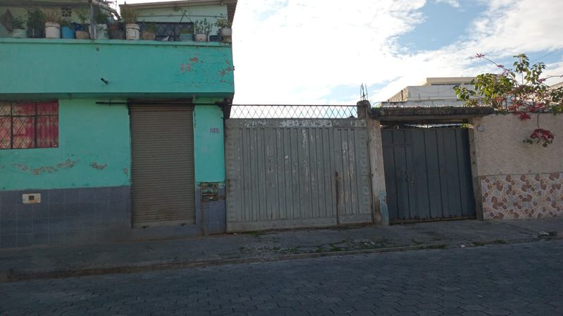
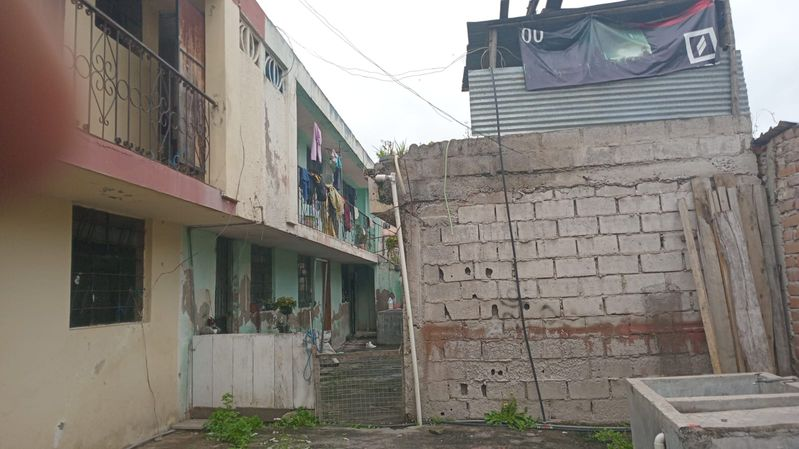
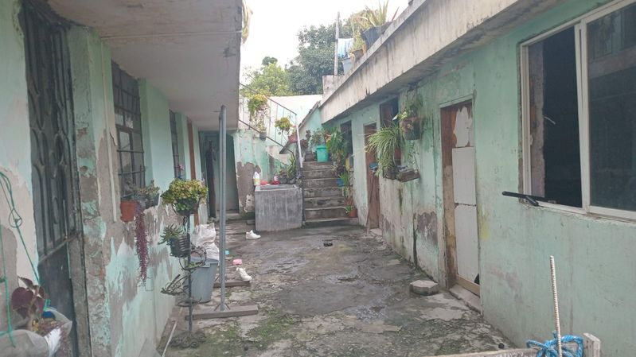
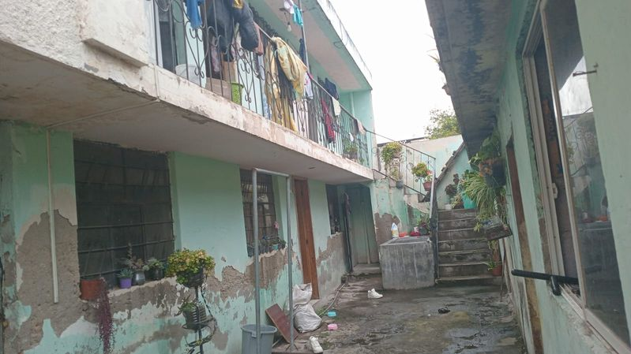

← volver al mapa
Departamento - EC-RJ-155250
EC-RJ-155250 · departamento · IBARRA, Imbabura
★ Oferta destacada




Datos del remate
| Avalúo pericial | $30,830 |
| Tipo de bien | departamento |
| Área de construcción | 125.40 m² |
| Área de terreno | 111.75 m² |
| Cantón / Provincia | IBARRA, Imbabura |
| Dirección / Sector | URBANO. periferico occidental |
| Señalamiento | Segundo Señalamiento |
| Fecha de remate | 2026-09-24 |
| No. de proceso | 10333202102628 |
Análisis vs. mercado
| Avalúo por m² | $246/m² |
| Mediana de mercado en la zona | $592/m² |
| Descuento vs. mercado | 58.4% |
| Comparables usados | 8 |
| Radio de búsqueda | 2000 m |
| Puntaje | 92/100 |
Descripción completa del avalúo
lote pequeño de forma rectangular,regular, en dirección al acceso comunal el ultimo inmueble al interior del conjunto;inmueble con todos los servicios basicos; lote de topografía plana con vias exteriores de primer orden, con escasas obras exteriores, y poco mantenimiento ,igual que en las edificaciones de vivienda unifamiliar y bodega comunal, que se encuentran en el lote referido; estas construcciones son de estructura de horm. armado, losas planas de cubierta y acabados parciales , de baja calidad (populares). edificaciones adosadas a los tres flancos con una edad aproximada de 25-30 años; vivienda en dos plantas y bodegas solo enplanta baja con terraza ccesible semiterminada en cuanto a acabados.en general la edificación presenta patologias constructivas de humedad en mamposterias y losas , poco mantenimiento y deterioro por abandono de sus propietarios , que al momento se encuentran habitando el inmueble .inmueble localizado en sector periferico de baja seguridad y escasa infraestructura de servicios para la tipologia residencial.
lote urbano al interior de conjunto, de cuatro edificaciones familiaraes,; vivienda unifamiliar con todos los servicios basicos, con estructura de horm. armado,losas planas de cubierta y mamposterias de bloque ; edificacion adosada los tres flancos con patio exterior de iluminacion y gradas exteriores con lavanderia; edif. 1 vivienda unifamiliar con todos los espacios basicos para su funcionalidad, en dos plantas y terraza inaccesible.const. semiterminada y con mantenimiento malo y regular; edif. 2., bodegas comunitarias del conjunto sin terminados y en horm. armado y losa plana, con escazo avance en cuanto a acabados, y en desuso ; en general edificaciones sin mantenimiento y con patologias constructivas de visible humedad y filtraciones.se visualiza avanzada edad de las edificaciones e infimo mantenimiento por abandono del inmueble.
periferico occidental
Límites: reproduccion de los linderos registrales parciales, " linderos del departamento: "... norte: patio interior en diez metros sesenta centimetros; ..sur: con propiedad del señor luis perez camino de entrada a zaguan de un metro de ancho en diez metros setenta centimetros; con el departamento tres, en tres metros cuarenta centimetros;.. occidente: con propiedad del señor josé meneces en tres metros cuarenta centimetros en la planta baja.." ademas los linderos que constan en el certificado registral de " bodegas", y la "planta alta " del departamento cuatro.
Clave catastral: 10010213284022000000000
Análisis de inversión
⚠ Dudosa — revisar bienBuen descuento (58%) pero con patologías de humedad, deterioro por abandono, y ubicada en un sector periférico de baja seguridad.
A favor:
En contra:
- Humedad y deterioro
- Sector de baja seguridad
Análisis elaborado a partir de la descripción del avalúo — no es asesoría legal ni financiera.
Esta ficha es una copia de lo publicado en el sitio oficial de remates
judiciales de la Función Judicial del Ecuador, para consulta — no
reemplaza el expediente judicial. remates.funcionjudicial.gob.ec no da
un link propio por remate, por eso se generó esta página aparte.
Antes de ofertar, el expediente debe revisarlo un abogado.